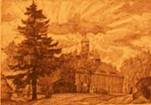
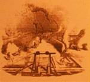
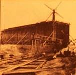
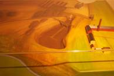
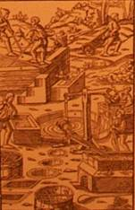
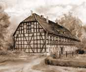

|

Alaunwerksschloss
Alaun,
ein Mineral, welches zu den Salzen gehört, war ein wichtiger Rohstoff für
die Weißgerberei, Papiermacherei, Färberei und in der Goldschmiede,
daneben wurde es medizinisch als blutstillendes Mittel verwen-det.
1560 verlieh Kurfürst August ein Privileg für die Nutzung der Lagerstätte
nordwestlich von Düben, und man begann sofort mit dem Aufbau eines
Bergwerkes. Zum Werk gehörte auch eine größere Waldfläche, da für die
Produktion viel Holz benötigt wurde.
In den ersten Jahren seines Bestehens sorgten Absatzkri-sen und schlechte
Bewirt-schaftung für etliche Besitzerwechsel, doch in seiner Blütezeit um
1800 war es das größte Alaunwerk in Deutschland. Damals wurden rund 6000
Zentner Alaun jährlich hergestellt, die etwa 50 Bergleute waren in
wohlfeile und passende Uniformen eingekleidet. 1812, während der
Kontinentalsperre, gelang hier im Labor des Alaunwerkes erstmals in
Deutschland die Herstellung schwefliger Säure, die ein wichtiger Rohstoff
für die Färberei und Weißgerberei war.

Alaunwerk
Ende des 18. Jahrhunderts
Nach 1815 ersetzte man
das inzwischen teuere Brennholz durch Torffeuerung. Die Flöze waren fast
erschöpft, und so verlegte man ab 1827 das gesamte Werk. Eine neue
Alaunhütte wurde errichtet, aber die Abbau- und Aufbereitungsmethode blieb
gleich. Als sich nach 1880 die chemische Alaungewinnung durchsetzte, wurde
das Dübener Alaunwerk 1886 geschlossen, da es nicht mehr rentabel arbeiten
konnte. 1898 verkaufte der letzte Besitzer das Gelände mit den
Betriebsgebäuden und dem Alaunwerksschloss an Adolf Löbcke, der die Idee
hatte, es als Kurbad umzunutzen.

Werkanlage
Die Sole wurde über das
Gradierwerk gepumpt. Beim Herabtröpfeln über das Schwarzdorngestrüpp
verdunstete Wasser und auf dem Gestrüpp setzte sich ein Belag aus
Verunreinigungen, Kalk und geringe Mengen Alaun ab.

Das Alaun-Erdreich
schwarz-grauer Farbe bauten die Bergleute im Tagebau sowie aus Flözen ab.
Zu langen Dämmen aufgeschüttet, löste sich durch Verwitterung das Alaun
vom umgebenden material. Tonige Bestandteile färbten sich durch das
Brennen rot: das „Rote Ufer“ an der Mulde war die Abraumhalde des Werks.
Nun musste das Alaun aus dem Gestein ausgeschwemmt werden. Dazu wurde es
in Bassins geschafft und mit Wasser ausgelaugt. Die Lauge pumpte man mit
Hilfe der Windkunst mehrmals über ein Gradierwerk, wobei viel Wasser
verdunstete und die Lauge immer alaunhaltiger wurde. In einem letzten
Arbeitsgang wurde sie in großen Wannen verdampft. Zurück blieb ein weißes
Pulver, das versandfertige Alaun.

Arbeiter im
Alaunwerk
|

Der Bad Dübener Ortsteil Alaunwerk gehörte einst zu
Schwemsal
Der heutige Ortsteil von Bad Düben wurde noch im Adressbuch von 1927 als
Schwemsal bezeichnet; und ganz einfach im Jahr 1932 als Schwemsal-
Alaunwerk. Die Zugehörigkeit vom einstigen Alaun-bergwerk sowie des damit
entstandenen und nach ihm benannten Ortsteil zu Schwemsal lässt sich
allerdings 450 Jahre zurückverfolgen!
Eine Ersterwähnung ist einem Verzeichnis der Marienbergischen
Bergwerksreviere von 1557 entnehmbar, wo das Alaunwerk bei Schwerz und
Rissdorf vermerkt ist. Ein Belehnungsbrief von 1560 beweist die Nutzung
des Geländes für den Bergbau.
Nach vorliegenden Texten alter Urkunden, von Schriftverkehr und Stempeln
ist eindeutig nachweisbar ab 1557: Alaunbergwerk Schwemsal oder auch nur
einfach: Alaunwerk Schwemsal. Gedruckt liegt das Programm mit Einladung
zum Jubelfest des 300-jährigen Bestehens des Alaunwerkes Schwemsal aus dem
Jahre 1860 vor, das auf Kosten und ,,zum Besten der Schwemsaler
Knappschaft" gedruckt wurde..
Der Irrtum, Das Aulaunwerk gehöre schon jahrhudnerlang zu Düben,
resultiert wahrscheinlich aus heimatkundlichen Schriften und
Zeitungsartikeln, wo auf das Alaunbergwerk und die dort einst nahe
gelegene Schiffmühle bezogen teilweise direkt Düben genannt wird. Vom
Ursprung her stimmt das nicht. Richtig dagegen ist auf die Zeit vor 1936
vom Alaunwerk zu formulieren ,,bei Düben".
In Preußen wurde am 27. Dezember 1927 ein Gesetz über die Regelung des
Gemeindeverfassungsrechtes verabschiedet. Damit war die Auflösung von
Gutsbezirken verbunden. Das hatte nicht nur Konsequenzen für die
Veränderungen in der Landwirtschaft und Flächennutzung, sondern auch für
Rechte in Ämtern. Eine Bestätigung zur Auflösung des Gutsbezirkes
Schwemsal erfolgte durch den Oberpräsidenten der Magdeburger Regierung am
19. April 1928.
Durch Beschluss der preußischen Staatsregierung vom 22. September 1928
erfolgte dann rechtsmäßig die Auflösung des Gutsbezirkes Schwemsal mit
Wirkung vom 30. September 1930. In diesem Zusammenhang kam es zur
Eingemeindung einiger in der Gemarkung Düben liegenden Flächen des
bisherigen Gutbezirkes Schwemsal - Richtung Hammermühle und Richtung
Alaunwerk- in die Stadtgemeinde Düben.
Besonders gravierend wirkte sich dies auf Feldwirtschaft und Viehhaltung
von Ort und Domäne Schwemsal aus. Rein flächenmäßig kam es zu einer
Einschränkung, auch steuermäßig ergaben sich für Schwemsal Nachteile. Der
Ortsteil Alaunwerk blieb aber zunächst weiter zu Schwemsal eingemeindet.
Der Gemeinde Schwemsal wurden mit Gutbezirksauflösung die im eigenen Ort
liegenden Bauerngehöfte zugeteilt, die bisher dem Gutsbezirk unterstanden.
Die Domäne blieb als Landwirtschaftlicher Großbetrieb selbständig. Für den
Domänenpächter endeten allerdings die bisherigen Funktionen und das mit
Macht des Vorstehers bzw. Stellvertreters des ,,Gutsvorstehers des
Gutsbezirkes" und des Amtsvorstehers.
Die Trennung des Ortsteiles Alaunwerk von Schwemsal erfolgte im Jahre
1936. Vorverhandlungen mit dem Landratsamt Bitterfeld und der
Stadtverwaltung Düben gab es bereits 1935. Protokollen der Dübener
Gemeinderatssitzungen ist zu entnehmen, dass man in Düben keineswegs von
der Eingemeindung des Alaunwerkes begeistert war. So wurde im
Sitzungsprotokoll vom 12. November 1935 formuliert: ,,Da die
Aufsichtsbehörde aus Gründen des öffentlichen Wohles die Eingemeindung
betreibt, wollen sich die Ratsherren diesem nicht entgegenstellen". Es
überwogen aber Bedenken. Das betraf u.a. den Vermerk, dass irgendwelche
Schulden bei der Finanzlage der Stadt Düben nicht übernommen werden
könnten. Ermittlungen haben ergeben, dass kaum zahlungsfähige Steuerzahler
vorhanden seien und die Eingemeindung erhebliche Aufwendungen bringe.
Genannt wurde hier Unterhaltung Wege und Straßen sowie Kosten für Licht
und Wasser. In Düben kam man zu der Konsequenz: Um Unkosten zu decken
müsste der Kreis Bitterfeld - da es sich beim Alaunwerk um eine Not
leidende Gemeinde handele - einen Zuschuss gewähren. Es kam dann zu
Kompromisslösungen. Der Landrat versprach nach Antrag einem zinslos
langfristigen Darlehen zuzustimmen. Am 9. Dezember 1935 stimmten dann die
Dübener Ratsherren der Eingemeindung zu. Über den Beschluss zur
Eingemeindung gab es im Bitterfelder Kreisblatt vom 7. März 1936 fo1gende
Veröffentlichung:
Der bisher selbständige Gemeindebezirk Schwemsal- Alaunwerk wird zum 1.
April in die Gemeinde Düben eingegliedert. Das Dübener Ortsrecht tritt
allerdings erst am 1. Juni in Kraft. Das Alaunwerk wird zwei Gemeinderäte
nach Düben entsenden."
Am 16. März 1936 beschloss man in einer Gemeinderatssitzung zu Düben:
,,Infolge der Eingemeindung Alaunwerk ist die Zahl der bisherigen
Gemeinderäte von sechs auf acht zu erhöhen". Realisiert wurde dies in
einer Ratssitzung am 29. Juni 1936. Im Protokoll gab es dazu den Vermerk;
dass die Gemeinderäte Arbeiter Albert Kersten und Mineralwasserfabrikant
Erich Wözel aufgenommen werden und als Ratsherren bezeichnet sind. Damit
war der Eingemeindungsprozess auch von dieser Seite her abgeschlossen. Zum
Schluss sei noch vermerkt, dass 1929 im damals noch Schwemsaler Ortsteil
Alaunwerk 94 Einwohner in 29 Haushalten lebten und es 17 Schulkinder gab.
1932 war die Einwohnerzahl auf 115 Personen angewachsen.
(H. Funk)


langes Haus auf dem Alaunwerk


 |